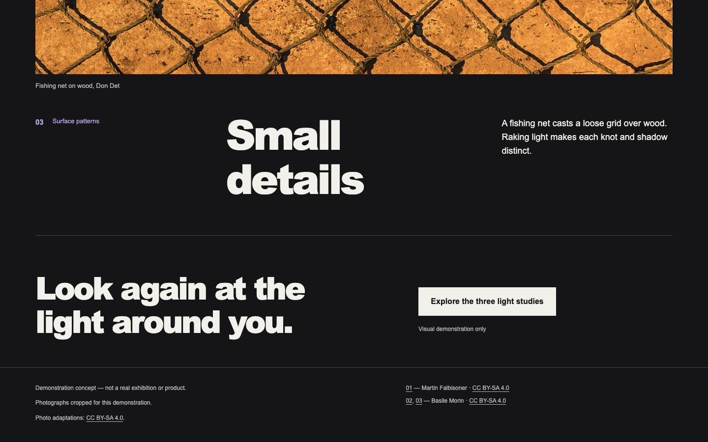
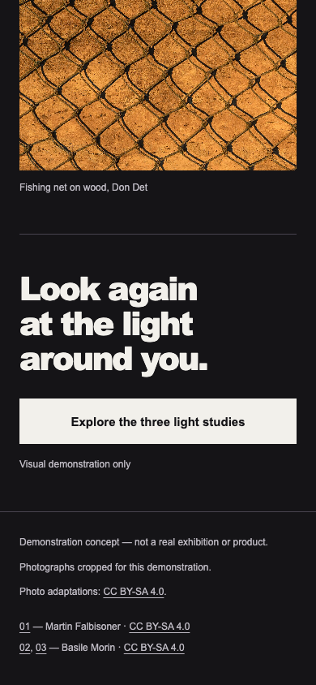
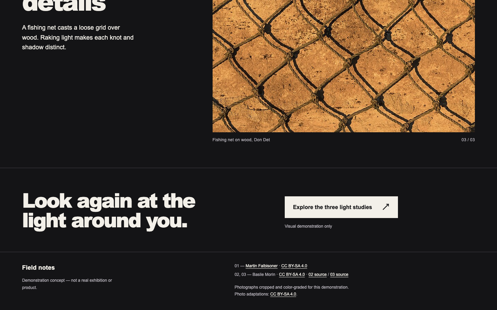
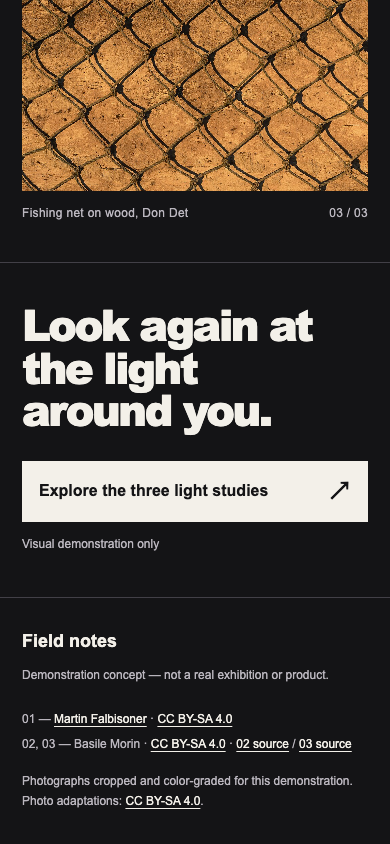
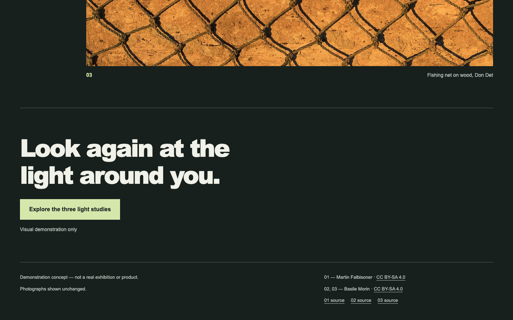
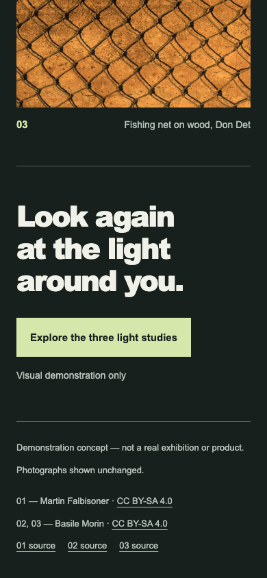
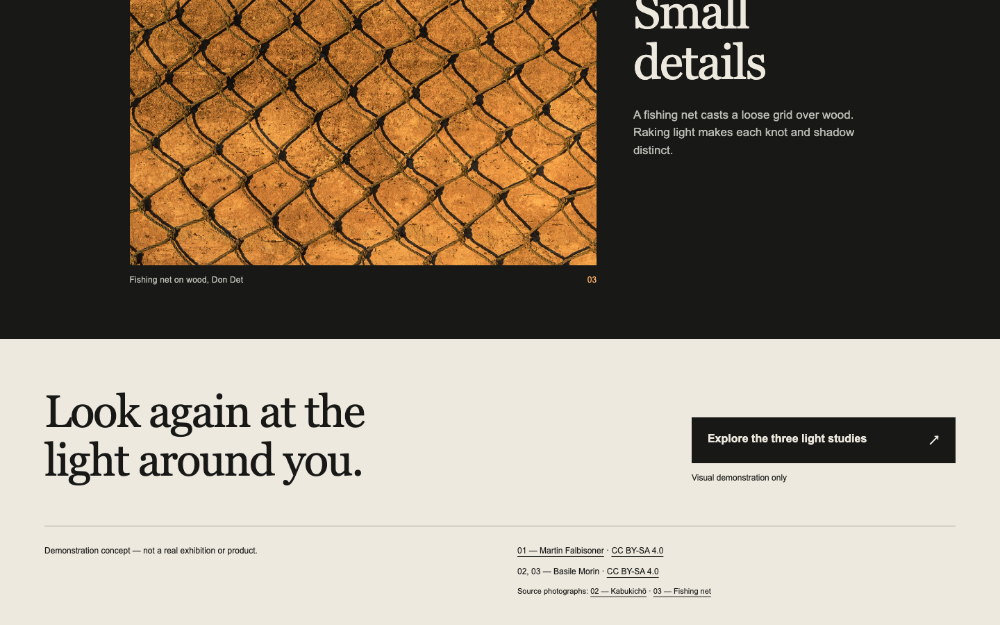
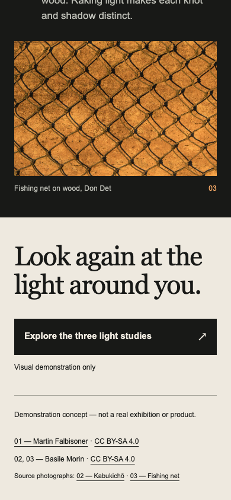

Frozen sample · 4 runs · 8 captures
Four instructed design runs
Author’s observation: In these four instructed runs, I did not notice a difference between using skills and not using skills.
This is a personal assessment of these results, not evidence that skills never help.
What this sample shows
These invitation-default captures show the closing invitation and footer, with part of the fishing-net study above. They are not complete pages.
The condition labels come from the supplied attachment. It does not independently verify skill exposure.
Prompts, model settings, skill-use logs, earlier failures and the wider comparison are not included. The frozen-design HTML hashes in the original remain unverified claims.
The images differ visually. This observation concerns perceived benefit, not identical pixels or measured effectiveness.
Full · required skills


Full · control


Minimal · required skills


Minimal · control


Preserved credits
The original credits remain visible inside every uncropped capture: 01 — Martin Falbisoner; 02, 03 — Basile Morin; CC BY-SA 4.0.
The full-brief captures describe photo adaptations under CC BY-SA 4.0. The minimal required-skills capture describes photographs shown unchanged.
Source-link labels remain in the captures; their original destinations are not supplied in this attachment. No source links or publication clearance are inferred.
Provenance and preservation
The original HTML and all eight extracted PNGs are unchanged. The author’s exact words and image hashes are recorded in the preserved provenance.
Original HTML SHA-256: dcea2bbb71fec9ec1a1726b40f4feb6cb5f989a7f0f4433d31f27c0791f6793a.
The original’s wider-comparison link opens a separately labelled missing-file notice, not fabricated evidence.